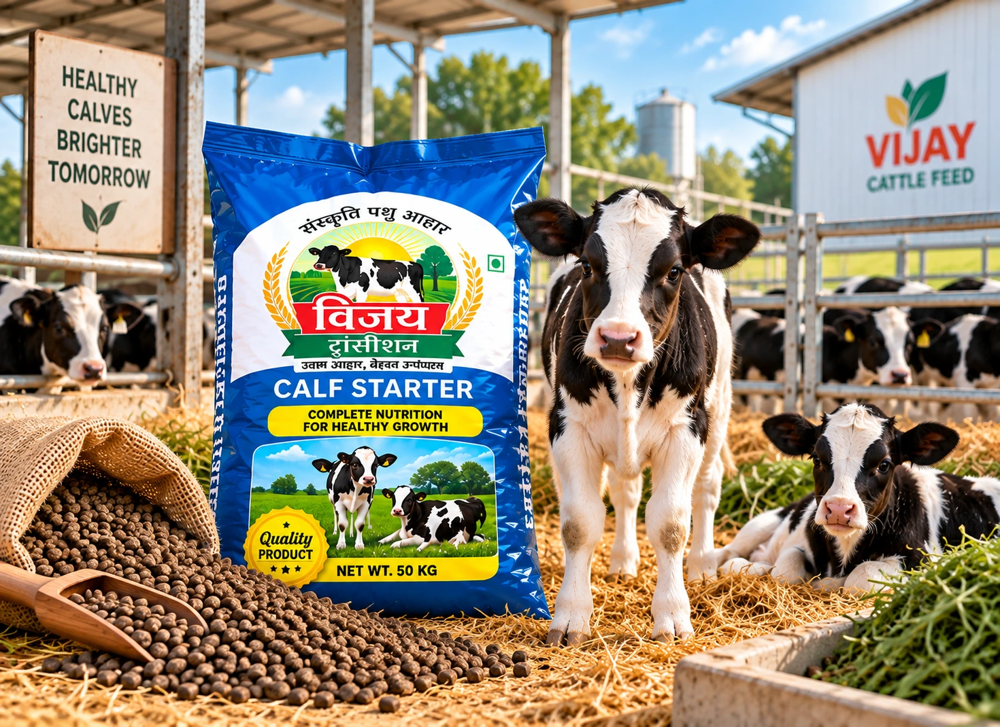
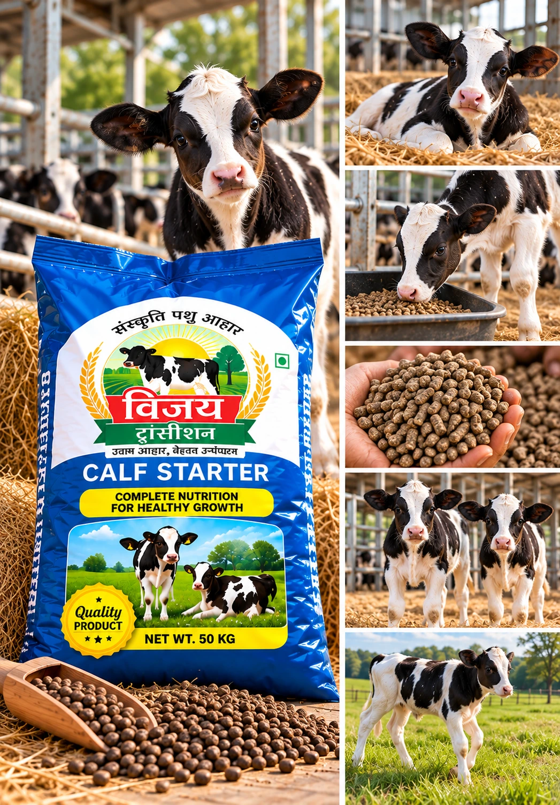
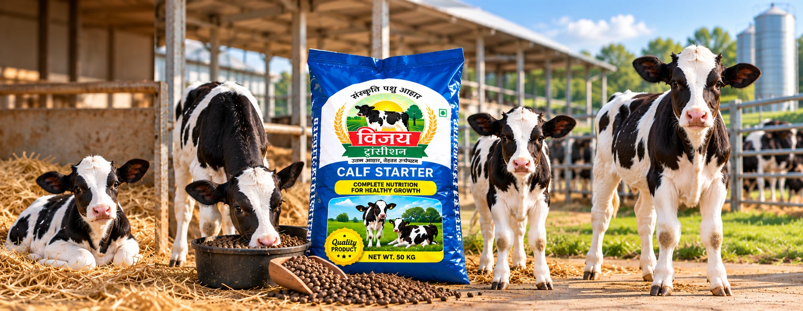
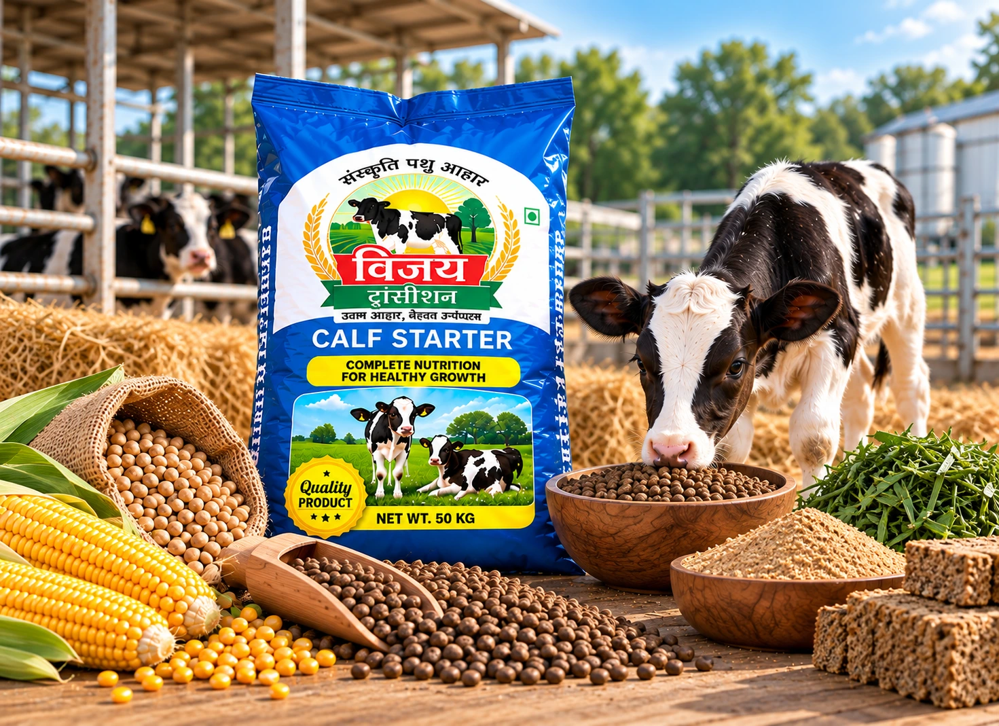
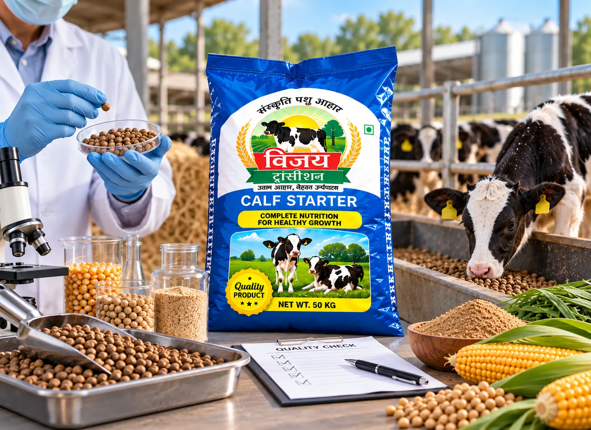

Made for Growing Calves
The first few months are an important stage in a calf's growth and development. Vijay Calf Starter provides a clearly defined feeding option specifically positioned for this early period.
According to the supplied product information, Vijay Calf Starter is intended to be given from approximately the second week after birth until 3 months of age.
The supplied information also describes the product as supporting stronger bones and helping the calf build its natural ability to cope with illnesses during early growth.
 Designed for calves from approximately the second week after birth through 3 months of age.
Designed for calves from approximately the second week after birth through 3 months of age.
What Defines Vijay Calf Starter
Made for Young Calves
A defined cattle feed option intended specifically for calves during the important early growth stage.
From the Second Week
According to the supplied information, Vijay Calf Starter can be introduced from approximately the second week after birth.
Up to 3 Months of Age
The recommended feeding period described in the supplied product information continues until approximately three months of age.
Supports Stronger Bones
The supplied product information describes Vijay Calf Starter as helping support bone strength during the calf's early development.
Supports Early-Age Resilience
The supplied information states that the feed helps calves build their ability to cope with illnesses that can occur during early age.

From Early Feeding to Healthy Growth
A calf's feeding requirements develop rapidly during its first few months. Vijay Calf Starter provides farmers with a product clearly positioned for this early growth period within the Vijay Cattle Feed range.
Early Calf Stage
The calf begins its early growth journey after birth with appropriate care and feeding.
From the Second Week
Vijay Calf Starter is intended to be introduced from approximately the second week after birth.
Supporting Early Development
Regular and properly managed feeding during this period supports the calf as it grows and develops.
Up to 3 Months
The defined Vijay Calf Starter feeding period continues until approximately three months of age.


A Defined Feed Choice for Growing Calves
Young calves require appropriate nutrition and management as they progress through the first months of life. Vijay Calf Starter gives farmers a clearly identified feed option for this particular growth stage.
Its defined feeding period—from approximately the second week after birth until three months of age—makes it easier to understand where the product fits within a structured calf-feeding programme.
Used alongside appropriate overall nutrition and farm management, Vijay Calf Starter is positioned to support the calf through this important early development stage.
Our Focus on Consistent Calf Feed
At Vijay Oil Mill, our cattle feed range includes products intended for different stages of animal growth and development. Vijay Calf Starter is specifically positioned for young calves during their early growth period.
Our focus remains on consistent product preparation, dependable packaging and clear product identification, helping farmers and dealers recognise the appropriate Vijay feed for each stage.
Vijay Calf Starter forms part of this defined product range, with its feeding period clearly focused on calves from approximately the second week after birth through three months of age.


Let's Grow Together
Interested in our products or looking for a dealership opportunity?
Contact Vijay Oil Mill